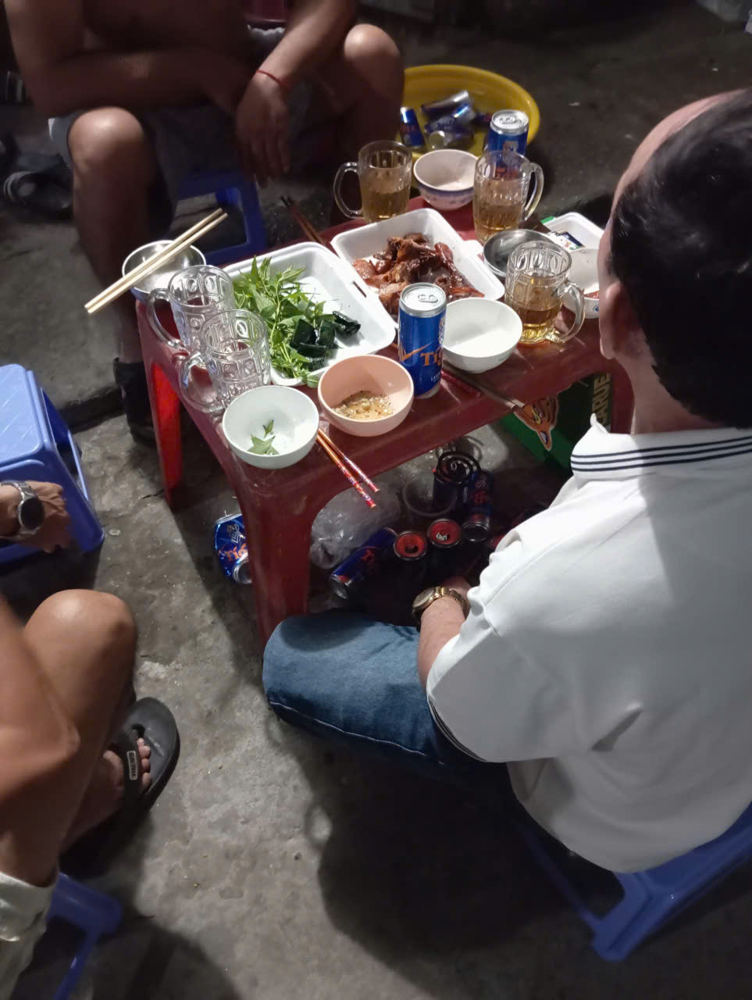
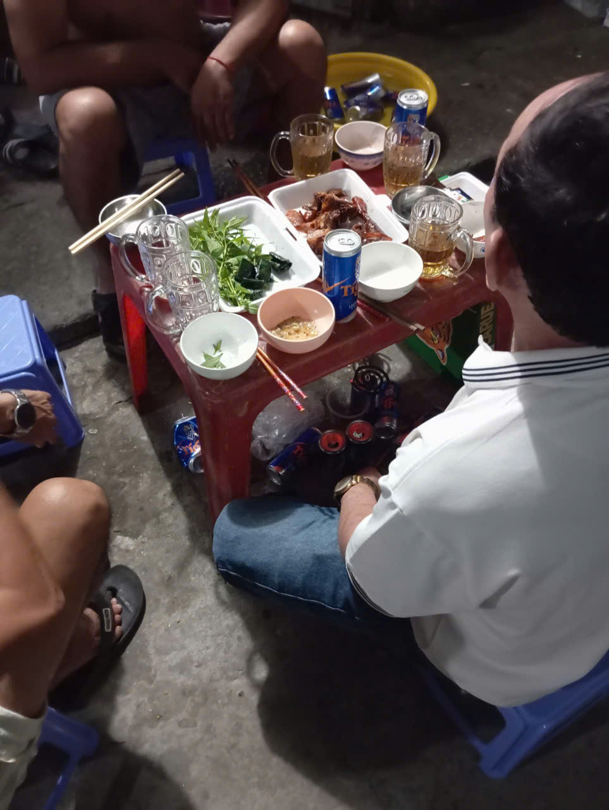

🥳 Trải nghiệm của bản thân
Cũng như bao nơi khác tại Việt nam, tại quê em, những người đã xa nhà, sẽ trở về thăm quê, thăm cha, thăm mẹ, thăm những người bạn bè mà ta đã lớn lên cùng và thăm những người thân, đường phố sẽ dần trở nên đông đúc, nhà nhà sẽ càng ngày càng tân trang nhiều hơn, và rồi khi ngày Tết đến, sẽ bắt đầu có những hoạt động nổi bật như, những bửa tiệc ngoài trời, âm nhạc được mở sáng đêm từ trong khắp các ngỏ ngách quê em, những ngày đi lễ hội, văn hóa (Đình, đi chùa, chợ đêm,...) và một số hoạt động, phong tục khác mà chỉ có trong ngày Tết quê em.
1. Tiệc ngày Tết 🍻
Khi đã nhắc đến sinh hoạt ngày Tết thì không thể bỏ qua những bửa tiệc nhậu linh đình, trên phố ngày Tết quê em, không chỉ gia đình, mà bạn bè, hàng xóm đều sẽ rủ nhau tổ chức mở bàn tiệc ngay ngoài trời, vào những ngày này, âm nhạc sẽ được phát liên tục từ khắp các ngõ đường, tiếng la hét phá vỡ sự yên lặng bình thường những ngày quê em và những bữa tiệc sẽ cứ nối nhau như thể không bao giờ tàn.
 



Vào những ngày Tết xưa qua lời kể của cha em và những hàng xóm khác, cứ mỗi dịp Tết, vào ngày đầu tiên, rất nhiều người trong xóm sẽ tụ họp lại bày bàn và nhậu nhẹt thậm chí có thể nói là hơn một nửa xóm đều ở đó, bởi vì cứ mỗi lần chuyện đấy xảy ra, cảnh sát sẽ đều sẽ có mặt, số lượng bàn, người nhiều đến mức lấn ra cả đường lộ, nhưng vào thời điểm đó, hầu hết đều uống rượu chứ không phải bia đồng thời không phải ai ở đó cũng để uống, có một số chỉ có mặt để góp vui trong sự náo nhiệt tưng bừng trên phố ngày Tết.
2. Chợ đêm 🏮
Là một trong những lễ hội nổi bật nhất trong năm, tại quê em, chợ đêm năm nào cũng đông đúc, tấp nập với từng dòng người xô đẩy, chợ đêm là biểu tượng cho ngày Tết rộn ràng kể cả trong đêm tối, là nơi mà gia đình, bạn bè hay người thân cùng ta dự hội, chợ đêm không chỉ là nơi vui chơi, mà còn là nơi để ta gắn kết và cùng nhau tận hưởng không khí xuân đêm.
Em vẫn còn nhớ những lần đi chợ đêm cùng gia đình khi còn nhỏ, em chỉ đến đấy với mục đích là mua đồ chơi và dần dần theo thời gian, khi em ngày càng trưởng thành, cha, mẹ đã không còn cùng em đi chơi chợ đêm nữa, đáng tiếc, năm nay dường như chợ đêm đã không còn được đông đủ như những năm trước, thậm chí đến cả phần đèn trên cầu đường cũng không được sửa, hoàn toàn không thể so được với những năm trước.
3. Đốt pháo hoa 🎆
Đốt pháo hoa, sự kiện nổi bật nhất ngày Tết, thời điểm đánh dấu cho một năm mới chính thức bắt đầu là thời điểm giao thừa khi đồng hồ đã đến mười hai đúng đêm, vào lúc này hàng chục, thậm chí là hàng trăm tiếng pháo hoa sẽ bắt đầu vang dội khắp nơi trên phố không chỉ ở riêng quê em mà mọi nơi ở đất nước Việt Nam ta, trên phố sẽ luôn có rất nhiều người chờ đợi để là một phần trong khoảnh khắc ấy và ở quê em cũng vậy, thời điểm giao thừa sẽ luôn có người đốt pháo hoa, mặc dù việc đốt pháo hoa ngày nay đã không còn được như xưa. Qua lời kể của cha em, mọi người thường chơi pháo nổ, cứ mỗi lần đốt tiếng pháo sẽ vang vọng khắp nơi trong xóm, thậm chí vang đến tận ngoài những đồng lúa mênh mông, và cứ mỗi lần những người làm nông như ba em nghe thấy tiếng pháo ngày Tết, họ sẽ bắt đầu nôn về ngay, vì ngay sau khi đốt pháo chính là lúc những bàn tiệc được dọn ra trong xóm. Ngày nay, loại pháo này đã bị cấm do tính rủi ro nguy hiểm rõ ràng của nó.


Dù không còn được như xưa nhưng việc đốt pháo hoa không chỉ đơn giản là một truyền thống không thể thiếu ngày Tết, mà còn là một biểu tượng mang đầy ý nghĩa, pháo hoa không chỉ nằm ở những chùm sáng rực rỡ trên bầu trời, mà còn là biểu tượng của niềm vui, một khởi đầu mới, thể hiện sự thịnh vượng trong đời sống vật chất của ta. Từ bao đời nay, pháo hoa đã trở thành nét đẹp không thể thiếu trong các dịp lễ hội, Tết Nguyên Đán và những sự kiện trọng đại của dân tộc Việt Nam, tại quê em, vào đúng thời điểm giao thừa, người dân xung quanh sẽ bắt đầu bắn pháo hoa, chính thức đánh dấu cho một năm mới đong đầy, hạnh phúc.
🎁 Ý nghĩa sinh hoạt ngày Tết 🍝


Sinh hoạt ngày Tết mang ý nghĩa rất sâu sắc trong đời sống văn hóa của người Việt. Đây là dịp để mọi người tạm gác lại công việc thường ngày, cùng nhau chuẩn bị và tham gia những hoạt động truyền thống như dọn dẹp, trang hoàng nhà cửa, đi chợ hoa, gói bánh chưng, bánh tét, cúng ông Công hay ông Táo, và quây quần bên mâm cơm tất niên. Những sinh hoạt này không chỉ tạo nên không khí rộn ràng, ấm áp mà còn thể hiện sự gắn kết gia đình, lòng biết ơn tổ tiên và niềm mong cầu một năm mới bình an, thịnh vượng. Bên cạnh đó, các phong tục như chúc Tết, lì xì, đi lễ chùa, xông đất đầu năm còn mang ý nghĩa cầu may, đem lại niềm vui và tài lộc cho mọi người. Tết vì thế không chỉ là kỳ nghỉ lễ, mà còn là dịp để giữ gìn và truyền lại những giá trị văn hóa truyền thống cho thế hệ sau.